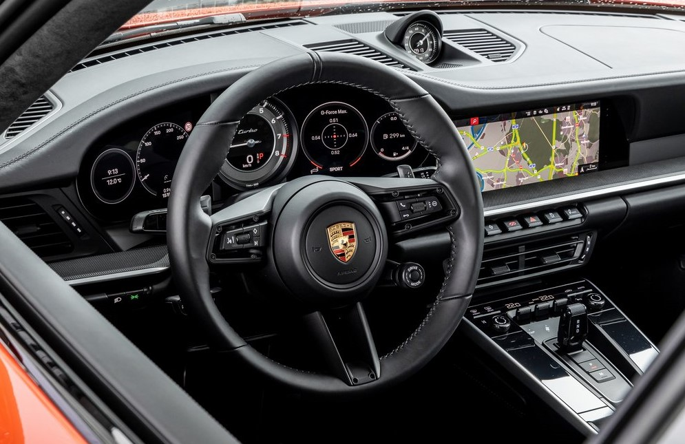

Новый 911 Turbo S — это воплощение стиля и скорости! Он сосредоточил в себе многолетние наработки компании и передовые технологии, но при этом сохранил традиционные для Porsche черты. Спорткар стал еще быстрее, маневреннее и комфортнее!
Каждая деталь в дизайне Porsche 911 Turbo S претерпела изменения, сохраняя при этом узнаваемость марки. Передние крылья традиционно выступают над капотом, а на задней части кузова расположены масштабные воздухозаборники, напоминающие жабры, предоставляющие охлаждение для размещенного там двигателя. Эти детали ссылаются на стиль предыдущих моделей Porsche 911 Turbo.
Тем не менее, ближе коснувшись каркаса, можно заметить передовые технологии, которые делают новый 911 уникальным по сравнению с прошлыми версиями. Особенности включают в себя четырехточечные LED-фары, элегантный задний световой контур, динамичный передний спойлер и массивный задний бампер с улучшенной аэродинамикой.
Внутренний мир Porsche 911 Turbo S скрыт от глаз, предлагая комфорт и роскошь наивысшего класса. Салон впечатляет своим качеством отделки, выбором материалов и современными цифровыми решениями. Предлагается выбор из трех типов передних сидений, декоративная светодиодная подсветка и передовая мультимедийная система с большим сенсорным экраном в 10,9 дюймов. Не упустите шанс протестировать новое чудо автомобильного мира на собственном опыте!